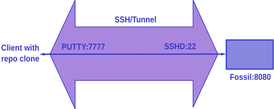

Fossil: clone Linux -> Windows
Fossil: clone Linux -> Windows
There is interesting VCS - https://www.fossil-scm.org/, written by SQLite3 author. When I tried to use it on remote Windows machines, I hit several problems: no local ssh.exe, problems with GSSAPI, authorization…
But these problems are solvable with SSH tunnel. Let's look at picture:

We can create SSH tunnel with Putty (SSH alternative for Windows, and not
only) and connect with fossil HTTP server via it. One machine will keep
fossil repo. First, we create it (I called it x):
fossil init x
fossil open x
fossil add somefile
fossil ci -m "init"
fossil ui
When fossil's UI will be opened, I add some user, for example, user and
grant them permissions AND password. Then kill fossil with ^C and start it in
serv mode (actually ui/serv mode lokks like the same). It will be bound to
default port 8080 (you can see this on fig).
On remote machine we start Putty, create some session and in SSH tunnel section creates tunnel (in "destination" input box) with local port 7777, IP of fossile machine and fossil port 8080, result should be:
L7777 fossil_IP:8080
Also we set "Local", "Auto" (or "Dynamic" - works too).
In session section we set host to fossil IP (where we created repo!), auto-login with name of fossil machine user. Now save session and open it. We are see console window, enter password and don't close it (another way is to use Putty agent). Open new console and enter there:
fossil clone http://fossil-user@localhost:7777//path-to-x x fossil open x
where path-to-x is the path to repo on fossil machine.
Now you have x repo locally. Works with them, commit, then push changes:
fossil push
If it ask password, enter it (this is the password of early created fossil user).